You can now generate images and videos directly inside of Claude Cowork. And as a Cowork Power user, this is something I'm beyond stoked for. I generated these images and videos directly inside of Claude. And in this video, I'm going to show you how to do the exact same thing. I'm also going to share with you for free five different skills you can use to help you generate these from scratch.
Interface & Outils : Présentation ou face-caméra explicatif du trader sans interface logicielle partagée.
Contenu textuel & Code : Explications orales des stratégies et mise en contexte méthodologique du marché.
Action / Démonstration : Explications face caméra et analyse conceptuelle des marchés.
And I'm even going to show you how to pair these with scheduled tasks so Claude can generate these for you while you sleep. So without further ado, let's dive right into this. So before I show you exactly how we can begin generating images and videos inside of Claude now, I want to talk about something real quickly. And that is Claude Cowork could do almost everything except for generate images and videos.
Interface & Outils : Présentation ou face-caméra explicatif du trader sans interface logicielle partagée.
Contenu textuel & Code : Explications orales des stratégies et mise en contexte méthodologique du marché.
Action / Démonstration : Explications face caméra et analyse conceptuelle des marchés.
And as a Cowork power user, this was extremely annoying. And honestly, one of the things that made Cowork not feel like a complete product yet. So if you aren't familiar with exactly why this would work, that is because the sandbox that Claude Cowork is inside of blocks outside AI tools. This is a perfect graphic to explain exactly what I'm talking about.
Interface & Outils : Présentation ou face-caméra explicatif du trader sans interface logicielle partagée.
Contenu textuel & Code : Explications orales des stratégies et mise en contexte méthodologique du marché.
Action / Démonstration : Explications face caméra et analyse conceptuelle des marchés.
So right here, we have Claude Cowork that's in this sandbox environment, and you aren't able to access these different image and video generation tools via API, such as Gemini, OpenAI, MidJourney, or Runway, in order to generate images or videos. And this was a big headache. And no matter what you did, there was basically no workaround from inside of Cowork.
Interface & Outils : Présentation ou face-caméra explicatif du trader sans interface logicielle partagée.
Contenu textuel & Code : Explications orales des stratégies et mise en contexte méthodologique du marché.
Action / Démonstration : Explications face caméra et analyse conceptuelle des marchés.
That is now fixed with the new Higgsfield connector inside of Claude that allows you to not only generate images, but generate videos automatically, directly inside of Claude. This is probably the most powerful connector that I've ever used inside of Claude because it solves a massive pain point that any Co-Work user has had before. The first thing we need to do in order to begin using this is we have to download the Claude desktop app in order to use Co-Work.
Interface & Outils : Présentation ou face-caméra explicatif du trader sans interface logicielle partagée.
Contenu textuel & Code : Explications orales des stratégies et mise en contexte méthodologique du marché.
Action / Démonstration : Explications face caméra et analyse conceptuelle des marchés.
So make sure to download this if you're a Mac user as well as a Windows user, you can download this to your computer. And then once you do that, we'll move on to the next step. Next up, we're going to open up the desktop app and we're going to see this interface here. If you've never used this before, let me give you a quick rundown. So on the top left where you see this little blue square, this is basically like interacting with Claude.
Interface & Outils : Présentation ou face-caméra explicatif du trader sans interface logicielle partagée.
Contenu textuel & Code : Explications orales des stratégies et mise en contexte méthodologique du marché.
Action / Démonstration : Explications face caméra et analyse conceptuelle des marchés.
As if it's Chachaviti, we could ask it questions. And then right here, we can see this little checklist that is co-work mode. And then on the right, that icon is code. We really want to focus on co-work in this video. So make sure to select that. And you could see that we now have this interface. Next up, this is what we're going to see on screen. And this is a really important step.
Interface & Outils : Présentation ou face-caméra explicatif du trader sans interface logicielle partagée.
Contenu textuel & Code : Explications orales des stratégies et mise en contexte méthodologique du marché.
Action / Démonstration : Explications face caméra et analyse conceptuelle des marchés.
So we need to select a specific folder that we want to work inside of. And what I mean by this is there are folders we're going to work inside of on our computer. And that is one of the key powers inside of Cowork. So what I'm going to do is I'm going to click on this. I'm going to scroll down. I'm going to choose a different folder. And from here, I'm just going to select new folder. And I'm just going to call this advertisements.
Interface & Outils : Présentation ou face-caméra explicatif du trader sans interface logicielle partagée.
Contenu textuel & Code : Explications orales des stratégies et mise en contexte méthodologique du marché.
Action / Démonstration : Explications face caméra et analyse conceptuelle des marchés.
And then we're going to be inside of this new folder. Click on open. Click allow so it can add different files. and then we will now see our advertisements folder right here. Another thing I want to note is if you have a preexisting folder with all of these different assets you want to use for ads, for example, you can just come here and select it. But for most people, you will probably want to start from scratch and then you'll have your advertisements folder right here.
Interface & Outils : Présentation ou face-caméra explicatif du trader sans interface logicielle partagée.
Contenu textuel & Code : Explications orales des stratégies et mise en contexte méthodologique du marché.
Action / Démonstration : Explications face caméra et analyse conceptuelle des marchés.
All right, so once you configure that folder inside of Cloud Cowork, we next need to leverage these skills that I'm gonna show you in this video. So I'm gonna show you right now exactly how you could download these. I created them for you guys completely for free and you could access them. There's a link in the description to grab these. Right here, we have all of these different skills that I'm gonna walk through in this video.
Interface & Outils : Présentation ou face-caméra explicatif du trader sans interface logicielle partagée.
Contenu textuel & Code : Explications orales des stratégies et mise en contexte méthodologique du marché.
Action / Démonstration : Explications face caméra et analyse conceptuelle des marchés.
But the question is, how do I download these and upload them to cowork? And I'm gonna show you that right now. So if you go to the link in the description, you will see this zip file as well as this PDF right here. So what we're gonna do is let's download this zip file. We're gonna see it downloaded here. And then let's download this PDF guide as well. So first of all, I'm gonna pull up this PDF guide.
Interface & Outils : Présentation ou face-caméra explicatif du trader sans interface logicielle partagée.
Contenu textuel & Code : Explications orales des stratégies et mise en contexte méthodologique du marché.
Action / Démonstration : Explications face caméra et analyse conceptuelle des marchés.
And what this is, is this is a step-by-step guide on exactly what problem this solves. It's gonna break down every single skill that I show in this video, as well as show when to use them. So I highly suggest you follow along with this video, but also use this PDF guide as a way to guide you through exactly how to use these. Next up, once we download both the zip file and the PDF guide, we need to grab that zip file that we downloaded to our desktop.
Interface & Outils : Présentation ou face-caméra explicatif du trader sans interface logicielle partagée.
Contenu textuel & Code : Explications orales des stratégies et mise en contexte méthodologique du marché.
Action / Démonstration : Explications face caméra et analyse conceptuelle des marchés.
Then we need to come over to the left-hand sidebar inside of Cowork, click on this customize button, and this is gonna take us to plugins. Plugins are basically just a bundle of skills that you could upload into Cowork instead of you having to individually add them. So I'm gonna come here, I'm gonna click on Create Plugin, click on Upload Plugin, and just drag that zip file right here into Cowork.
Interface & Outils : Présentation ou face-caméra explicatif du trader sans interface logicielle partagée.
Contenu textuel & Code : Explications orales des stratégies et mise en contexte méthodologique du marché.
Action / Démonstration : Explications face caméra et analyse conceptuelle des marchés.
Click on Upload. For me, I'm just gonna click Replace, but for you, it'll just automatically upload this. And just like that, we now have all six of these specific skills here, along with the description breaking down exactly what this plugin is for. Real quick, if you guys do wanna dive deeper into Clawed Cowork, make sure to join my school community. There is a link in the description to do so.
Interface & Outils : Présentation ou face-caméra explicatif du trader sans interface logicielle partagée.
Contenu textuel & Code : Explications orales des stratégies et mise en contexte méthodologique du marché.
Action / Démonstration : Explications face caméra et analyse conceptuelle des marchés.
Inside of here, there are some high-level entrepreneurs and professionals that are using Cloud Cowork every single day, sharing some pretty cool use cases, as well as we have a full course on how to use Cowork inside of here. And all of the resources from my videos are here as well, such as this document here that breaks down exactly how Live Artifacts works. I'm sharing resources in here almost every single day for you guys.
Interface & Outils : Présentation ou face-caméra explicatif du trader sans interface logicielle partagée.
Contenu textuel & Code : Explications orales des stratégies et mise en contexte méthodologique du marché.
Action / Démonstration : Explications face caméra et analyse conceptuelle des marchés.
So if you want to join, there is a link in the description to do so. Next up in our setup, this is something that you don't have to do, but I highly advise you do do this. As a Claude Cowork power user, this is a hack that honestly has been one of the most influential things I've done. And that is taking advantage of Claude projects. Inside of Cowork, we're gonna select this projects button on the left-hand sidebar.
Interface & Outils : Présentation ou face-caméra explicatif du trader sans interface logicielle partagée.
Contenu textuel & Code : Explications orales des stratégies et mise en contexte méthodologique du marché.
Action / Démonstration : Explications face caméra et analyse conceptuelle des marchés.
And if you do not know what a project is, this is basically a separate ecosystem for different use cases you have for Cowork, and it could really help you stay organized. To show you exactly what a project looks like, this is my YouTube's video project. We can chat with it right here. You can see all of the different outputs here from this specific project.
Interface & Outils : Présentation ou face-caméra explicatif du trader sans interface logicielle partagée.
Contenu textuel & Code : Explications orales des stratégies et mise en contexte méthodologique du marché.
Action / Démonstration : Explications face caméra et analyse conceptuelle des marchés.
We can see all the different chats that are on the project. We could see all of our scheduled tasks. We have specific instructions for this project. We could see any of the context that we have as well as the memory. So to show you all of the projects I have, I have five different ones inside of Cowork. I have one for my financials. I have one for my short form. I have one for my school community.
Interface & Outils : Présentation ou face-caméra explicatif du trader sans interface logicielle partagée.
Contenu textuel & Code : Explications orales des stratégies et mise en contexte méthodologique du marché.
Action / Démonstration : Explications face caméra et analyse conceptuelle des marchés.
I have one for my influencer marketing agency and I have one specifically dedicated for YouTube videos. So not only do projects help keep you organized and it's a really nice visual inside of co-work, but a key point here is that we could have separate ClaudeMD files for each different project. And if you don't know what a ClaudeMD is, let me break it down super simply now so literally anybody can understand it. Think of this as a markdown file, which is a document that basically just explains a couple of different things. It explains your voice and your tone. It explains your rules, different contexts that it has on you, specific preferences, and the different tools that
Interface & Outils : Présentation ou face-caméra explicatif du trader sans interface logicielle partagée.
Contenu textuel & Code : Explications orales des stratégies et mise en contexte méthodologique du marché.
Action / Démonstration : Explications face caméra et analyse conceptuelle des marchés.
you use. Think of this as training an AI employee one time, and it always knows how to perform every single time that you interact with it. And every message that you send Claude in a specific folder pulls up your MD file every time. So it will always give you similar outputs and responses. To show you exactly what I mean, let's come back into co-work. I'm going to show you my Claude file for my YouTube's video folder. So if I click on instructions here, we can see a Claude MD file that is basically just a set of instructions. And this one is specific to YouTube. So every single time I message with Claude in this project, it's automatically going to load this. So it knows how
Interface & Outils : Présentation ou face-caméra explicatif du trader sans interface logicielle partagée.
Contenu textuel & Code : Explications orales des stratégies et mise en contexte méthodologique du marché.
Action / Démonstration : Explications face caméra et analyse conceptuelle des marchés.
to work with me on this specific task, but we don't want to use this Claude MD. If we're generating ads, for example, we're most likely going to want to create our own separate Claude MD file for that specific project and that is why we're going to set up a project. This is a perfect visual. So for YouTube, we're going to have a separate CloudMD file. We're going to have a separate one for ads.
Interface & Outils : Présentation ou face-caméra explicatif du trader sans interface logicielle partagée.
Contenu textuel & Code : Explications orales des stratégies et mise en contexte méthodologique du marché.
Action / Démonstration : Explications face caméra et analyse conceptuelle des marchés.
We're going to have a separate one for email and for community. That way, basically, these are custom to whatever we're working on. And the big thing here is this is going to save you a lot of money on token costs because you're not just using an over bloated CloudMD file. That's just going to waste your credits. It's going to be specific to creating advertisements. In order for us to create a project, we're going to come over to the left-hand sidebar, make sure that we have selected projects here. And then from here, we're going to click on the top right where it says new project. So I'm going to open that up. We can either start from scratch, import a project from chat mode, or use an existing folder on our computer. So what I'm going to do is use an existing folder.
Interface & Outils : Présentation ou face-caméra explicatif du trader sans interface logicielle partagée.
Contenu textuel & Code : Explications orales des stratégies et mise en contexte méthodologique du marché.
Action / Démonstration : Explications face caméra et analyse conceptuelle des marchés.
I'm going to select the one that I created at the beginning called advertisements. Once that is selected, we could either explain our instructions right here to Claude, add different files and whatnot. But I'm just going to click create and I'm going to show you a hack in order to populate and create this ClaudeMD file without you running around like a chicken with your head cut off, trying to figure out what to do. Luckily for you guys, inside of the plugin that I'm going to share for this video, there's a link in the description completely free. Not only are you going to get the skills that I am showing in this video, but you're also going to get this skill that will help you set up this ClaudeMD file so you don't need to start from scratch and do it yourself. And that
Interface & Outils : Présentation ou face-caméra explicatif du trader sans interface logicielle partagée.
Contenu textuel & Code : Explications orales des stratégies et mise en contexte méthodologique du marché.
Action / Démonstration : Explications face caméra et analyse conceptuelle des marchés.
skill is called Setup Higgsfield Project, as you can see here with all of these instructions that you could change, but this is a really good starting point in order for you to set this up. Now, coming back to our advertisements project, we just need to select this. And this is what we're gonna see here. Next up, what I'm gonna do is type forward slash setup Higgs field project.
Interface & Outils : Présentation ou face-caméra explicatif du trader sans interface logicielle partagée.
Contenu textuel & Code : Explications orales des stratégies et mise en contexte méthodologique du marché.
Action / Démonstration : Explications face caméra et analyse conceptuelle des marchés.
You will see this populated in the skills that we have inside of Claude. And then literally all I have to do is click on send. And it's gonna take us through a couple of different questions in order to help us set this up. And the best part about this skill that I gave you is it's gonna walk you through a couple of different questions. And it's going to pull up this cool little question box for us to walk through a couple of different things.
Interface & Outils : Présentation ou face-caméra explicatif du trader sans interface logicielle partagée.
Contenu textuel & Code : Explications orales des stratégies et mise en contexte méthodologique du marché.
Action / Démonstration : Explications face caméra et analyse conceptuelle des marchés.
So first of all, it's going to ask us what should we call this content workspace? What are we making here? What brand voice fits best? And it's also going to ask which platforms are we actually going to create content for? On top of that, it's going to talk about our default character for this UGC actor that we're creating, as well as the colors and the specific output folder structure.
Interface & Outils : Application Cowork / Claude AI (Opus 4.7)
Contenu textuel & Code : Formulaire de configuration interactive "Set up Higgsfield project workspace" : questions sur le type de publication, la voix de la marque, les plateformes sociales cibles, les acteurs UGC et le code couleur.
Action / Démonstration : Défilement et passage en revue des paramètres de configuration guidée pour la création d'un projet de contenu IA.
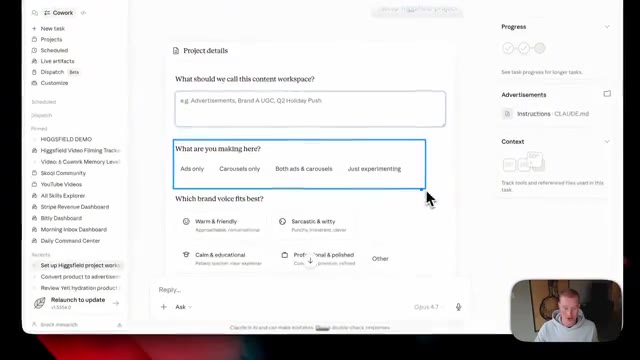
🔍 Agrandir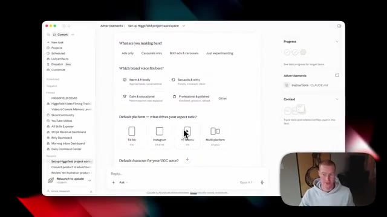
🔍 Agrandir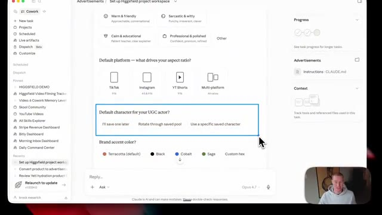
🔍 AgrandirSo let me just go through and add all of this. Once we go through that checklist of our different specifications, we will now have a ClaudeMD file generated. So we're going to see that in a couple of different spots. We'll see it down here at the very bottom. So it shows ClaudeMD. And then also inside of our advertisements project, we can now see instructions, which is our ClaudeMD file. And if I open it up, this is basically a step-by-step guide on exactly how this project should function.
Interface & Outils : Application Cowork / Espace de travail Claude AI.
Contenu textuel & Code : - Paramètres configurés : Projet (Advertisements), Voix (Professional & polished), Formats vidéo (9:16 principal, 4:5 secondaire, 2k), Couleur d'accentuation (#0A7756), Répertoires de sortie (outputs/ads/, outputs/morning/). - Fichiers générés : `CLAUDE.md`, `Instructions - CLAUDE.md`. - Modèle utilisé : Opus 4.7.
Action / Démonstration : Démonstration des emplacements où s'affiche le fichier de règles `CLAUDE.md` généré automatiquement après validation des spécifications du projet.
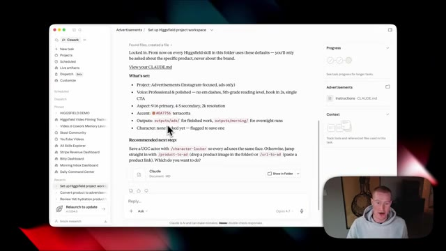
🔍 Agrandir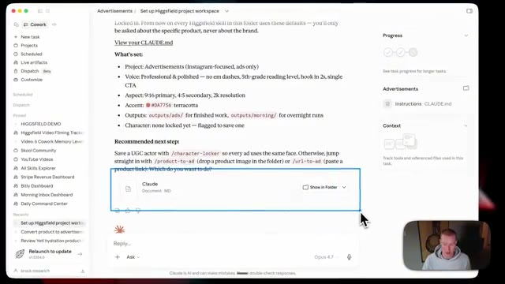
🔍 Agrandir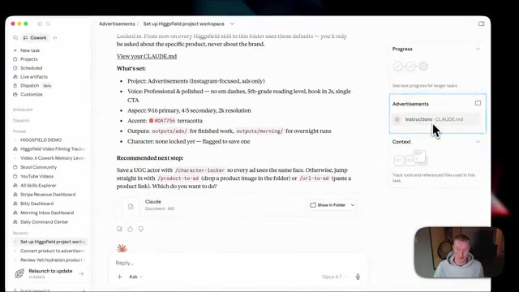
🔍 AgrandirAnd if we want to make any changes to this, we can just go ahead and do so. It's a markdown file. It's very easy to make changes. It even explains the output structure, which is going to come in handy later on in this video when we start using this. All right, you've installed all of the skills. You've set up your working folder for your ads. And we even created a project that you could see right here inside of Cloud Cowork.
Interface & Outils : Application de bureau Cowork / Claude (éditeur Markdown et espace de travail IA).
Contenu textuel & Code : Fichier `CLAUDE.md` avec paramètres de projet : règles de ton/voix ("Confident, premium, polished", règles sans mots d'interjection), directives de style et arborescence de la structure de sortie (`Output structure`: `Advertisements/outputs/ads/`, `carousels/`, `morning/`, etc.).
Action / Démonstration : Explication de l'arborescence du projet et de la facilité d'édition du fichier de configuration Markdown.
The question is now, how do we connect this to Higgs field and begin generating images and videos? So I'm going to show you exactly how to do that right now. First of all, what we're going to do is we're going to come over to the left hand sidebar inside of Cowork. We're going to click on customize. this is where we need to configure our connector. So we need to click on connectors right here.
Interface & Outils : Application Cowork (interface web de gestion de projet et d'IA)
Contenu textuel & Code : Menu latéral de personnalisation, sections "Personal plugins", "Skills", "Connectors" et options de configuration de l'outil.
Action / Démonstration : Navigation dans l'interface de Cowork et clic sur l'onglet de personnalisation dans la barre latérale gauche.
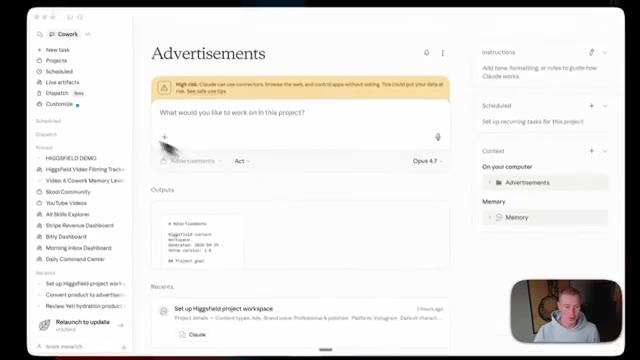
🔍 Agrandir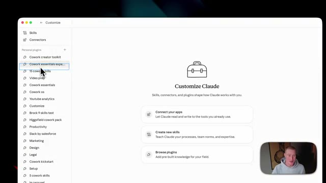
🔍 AgrandirAnd what we are gonna do is click on this plus button and we are going to add a custom connector. From here, we're just gonna call this Higgs field and then we're gonna paste in this specific URL here. So screenshot this, paste this exact same URL and then we're gonna click on add. And just like that, you can now see that Higgs field is connected.
Interface & Outils : Interface de configuration des connecteurs personnalisés (application Claude / Cowork).
Contenu textuel & Code : Formulaire d'ajout de connecteur personnalisé avec nom et URL d'API (https://mcp.higgsfield.ai/mcp).
Action / Démonstration : Ajout et configuration d'un connecteur personnalisé nommé Higgsfield en renseignant son URL.
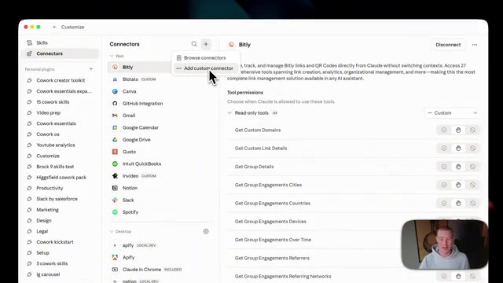
🔍 Agrandir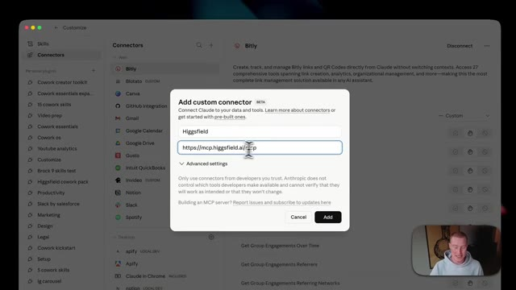
🔍 AgrandirNous avons tous ces différents outils que Claude pourrait fondamentalement exécuter pour nous en ce moment même. Il pourrait donc générer des images, il pourrait générer des vidéos, montrer toutes les générations, toutes ces différentes choses. L'élément clé ici, cependant, vous devez vous assurer d'avoir un compte Higgsfield. Vous pouvez toujours vous inscrire au forfait le moins cher afin de commencer à générer des images et des vidéos. Et si vous atteignez les limites, vous pouvez alors passer à un forfait supérieur payant.
Interface & Outils : Interface logicielle de configuration de connecteurs (plugin Higgsfield).
Contenu textuel & Code : Options de permissions d'outils interactifs (« Generate Image », « Generate Video », « Show Generations », « Display Results », « Show Medias ») et outils en lecture seule.
Action / Démonstration : Présentation des différents outils et permissions que Claude peut exécuter (génération d'images, de vidéos, etc.).
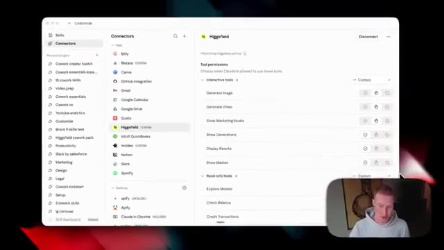
🔍 Agrandir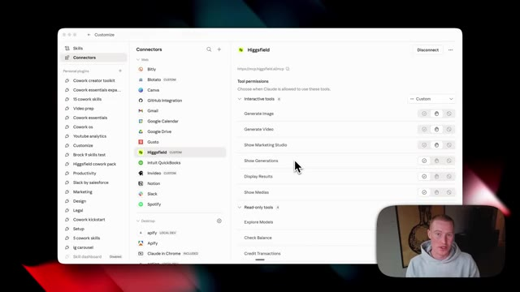
🔍 AgrandirMais je tiens à dire que c'est la meilleure alternative pour générer des vidéos et des images dans Claude en ce moment. Personnellement, ce que je vais faire pour ces autorisations, c'est de toujours autoriser. De cette façon, je n'ai pas toujours à approuver fondamentalement chaque petite chose que Co-workers essaie de faire pour moi afin de générer des vidéos et des images. Faites cela à vos propres risques, bien sûr, car cela pourrait consommer certains de vos jetons que vous ne voulez pas utiliser. Faites donc simplement ce qui fonctionne le mieux pour vous. Très bien. Disons donc que nous voulons ajouter d'autres connecteurs à Claude que nous ne voyons pas à l'intérieur de cette liste ici. Disons que vous faites défiler tout cela et qu'il y en a un que vous voulez ajouter qui n'est tout simplement pas à l'intérieur d'ici. Je vais vous montrer comment ajouter d'autres
Interface & Outils : Application de bureau Claude (interface de configuration des connecteurs et plugins tiers).
Contenu textuel & Code : Liste des connecteurs (Bitly, Canva, GitHub, Google Calendar, Higgsfield, Firecrawl, Notion, Slack, etc.) et options de permissions pour les outils interactifs et en lecture seule.
Action / Démonstration : Navigation et configuration des permissions d'outils pour les connecteurs d'intelligence artificielle dans l'application.
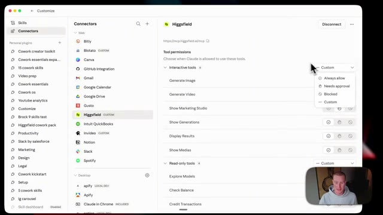
🔍 Agrandir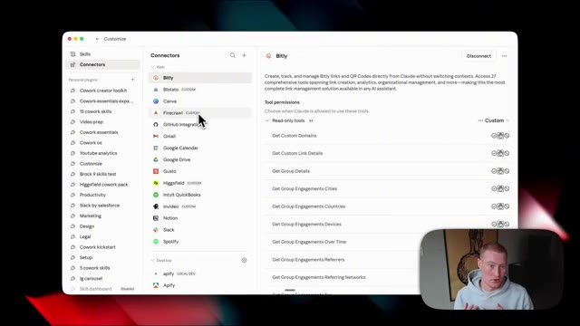
🔍 Agrandirapplications en ce moment. Et c'est une astuce simple pour les utilisateurs non techniques. Donc, j'utilise personnellement un serveur MCP appelé Zapier MCP, mais vous pourriez utiliser n'importe quel serveur MCP que vous voudriez. Donc, je vais cliquer sur commencer. Et une fois que je suis dans mon compte, je vais voir cette interface. Pour moi, j'ai ce serveur MCP connecté, qui a fondamentalement accès à toutes ces différentes applications et à tous ces outils. Et je pourrais en ajouter autant que je veux. Et il y a 9 000 applications différentes auxquelles Zapier MCP peut se connecter. Donc, afin de configurer un serveur, nous allons cliquer sur nouveau serveur MCP.
Interface & Outils : Navigateur web affichant le site Zapier MCP et son tableau de bord de configuration.
Contenu textuel & Code : Page de présentation et interface de gestion des serveurs MCP connectés à des applications tierces (ClickUp, HubSpot, Stripe, Google Drive, Skool, Google Docs).
Action / Démonstration : Navigation sur le site Zapier MCP et présentation du tableau de bord de configuration des outils.
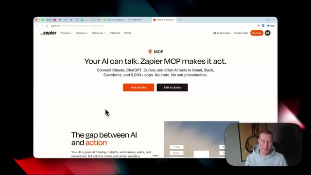
🔍 Agrandir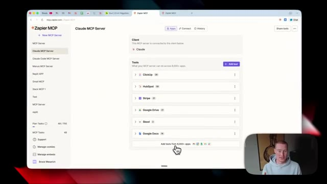
🔍 AgrandirNous allons cliquer sur cowork. Et à partir d'ici, nous pouvons simplement ajouter n'importe laquelle de ces applications que nous voulons. De cette façon, nous pourrons avoir accès à ces connexions. Ensuite, une fois que nous avons ajouté nos applications et que nous voulons connecter cela à Claude, nous cliquons simplement sur connecter en haut. Nous cliquons sur ce bouton « ajouter à Claude » et tout ce que nous avons à faire est de cliquer sur connecter Zapier, de cliquer sur autoriser, et cela devrait nous ramener à Claude et cela devrait fonctionner sans problème. Ainsi, toutes les applications que nous ajoutons, nous pouvons désormais y accéder, en extraire des informations et exécuter différentes actions grâce au MCP de Zapier. Très bien, et ensuite, testons cela. Donnons-lui simplement une consigne très simple pour générer une image. Je vais donc simplement venir ici et dire, générer une image d'un homme roux se tenant devant le Austin
Interface & Outils : Navigateur web, interface Zapier MCP, application Cowork.
Contenu textuel & Code : Liste des outils connectés (ClickUp, HubSpot, Stripe, etc.) et écran de liaison des comptes.
Action / Démonstration : Connexion et autorisation des applications pour les lier à Claude via Zapier MCP.
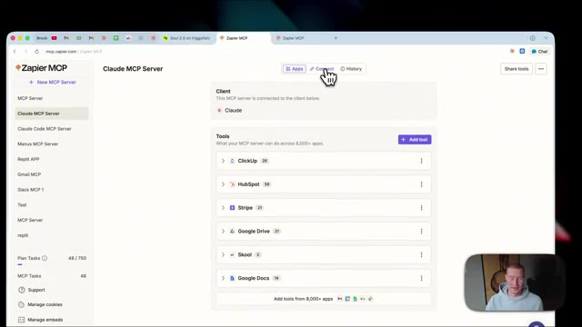
🔍 Agrandir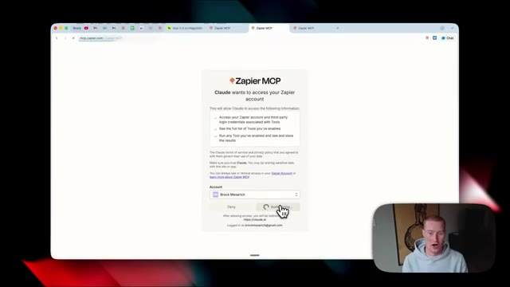
🔍 Agrandir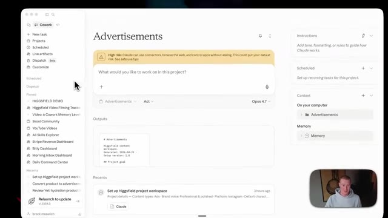
🔍 AgrandirSkyline et je veux que ce soit dans un style GTA 5. Donc on veut essentiellement vérifier que la génération d'images fonctionne. Je vais donc vous montrer exactement comment cela va fonctionner maintenant. Et voilà. On peut voir que Hicksfield est en train de générer cette image. C'est incroyable. Si vous avez déjà utilisé Cowork, c'est là qu'on serait bloqué. Ça dirait essentiellement que je ne peux pas générer d'images et de vidéos. Et ensuite on serait bloqué et on devrait aller utiliser quelque chose comme CloudCode ou un autre outil de génération d'images. Donc c'est plutôt cool. On peut voir qu'il utilise maintenant Nano Banana Pro ici dans un format neuf par six. Et ensuite on peut aussi toujours voir notre fichier Claude MD que nous
Interface & Outils : Application de génération d'images / interface de flux de travail (Cowork)
Contenu textuel & Code : Prompt affiché : "Generate an image of a red-headed man standing in front of the Austin skyline, and I want it to be in a GTA V style."
Action / Démonstration : Saisie et envoi d'un prompt pour tester la génération d'images par IA.
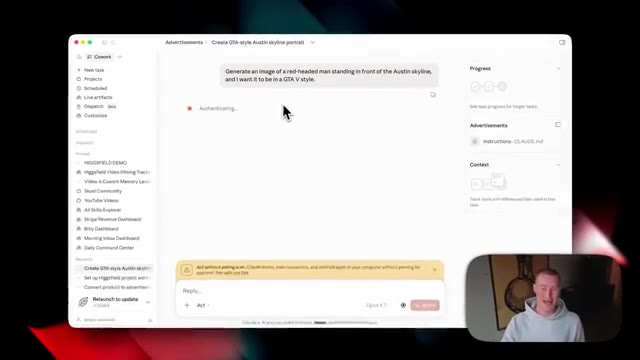
🔍 Agrandircréé ici. Donc, en gros, c'est juste notre ensemble d'instructions que nous avons configuré. Nous pourrions toujours changer cela et, en gros, configurer notre style spécifique que nous aimerions qu'il utilise. Très bien. Et juste comme ça, littéralement à peine 30 secondes plus tard, nous avons ce visuel et il montre Austin. C'est au format GTA 5 et il montre même les différents bâtiments de la skyline d'Austin. Donc, cela fonctionne correctement. L'une des principales raisons pour lesquelles c'est si génial dans Claude, c'est que nous pouvons transformer n'importe quoi en compétence. Donc, disons que nous aimons ce style exact de ce personnage de GTA et la manière exacte dont cela rend. Transformons maintenant cela en compétence. Donc, chaque fois que nous voulons faire quelque chose
Interface & Outils : Cowork / application de bureau basée sur l'IA avec interface de chat et panneau de projet. [DESC_IMAGE_1]
Contenu textuel & Code : Prompt textuel 'GTA V cover art style illustration...' et image générée affichée au centre. [DESC_IMAGE_1]
Action / Démonstration : Navigation dans l'interface de l'application et visualisation d'une illustration générée par l'IA.
similaire, il pourrait le générer comme ça à chaque fois. Donc je vais littéralement juste dire, hé, est-ce que tu peux aller de l'avant et transformer ceci en une compétence ? Je veux que ce soit la compétence GTA 5 pour générer des images comme ça à chaque fois que je l'utilise. Et chaque fois que tu génères quelque chose de bien, disons que c'est une publicité spécifique ou peut-être une photo de profil de toi-même, qui ressemble à un portrait professionnel de toi-même, tu pourrais alors transformer cela en une compétence. Comme ça, elle pourrait s'exécuter exactement de la même manière à chaque fois. Très bien. Et 30 secondes plus tard, nous avons maintenant cette compétence, tu peux voir à l'intérieur de cette petite chose de contexte. Et si je fais remonter ceci, tu peux voir en gros cette description. Elle montre le modèle de prompt exact, et cetera. Donc chaque fois que je veux générer ceci
Interface & Outils : Application Cowork (interface web ou bureau) avec un panneau de discussion et de gestion de tâches.
Contenu textuel & Code : Génération d'une image de style artistique GTA 5, invite textuelle pour transformer le style en une compétence réutilisable, et confirmation de l'installation de la compétence "gta-5".
Action / Démonstration : Démonstration de la création d'une compétence personnalisée (skill) dans l'application Cowork pour automatiser la génération d'images dans un style spécifique.
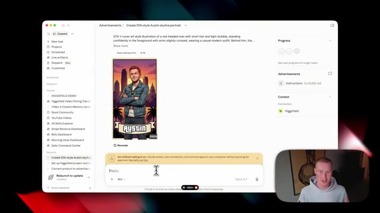
🔍 Agrandir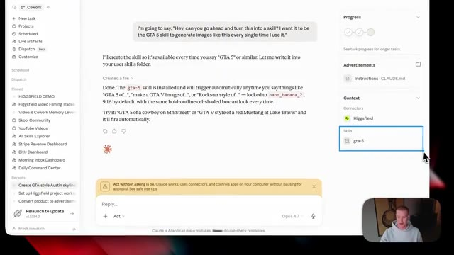
🔍 Agrandirexactement le même style, je pourrais le faire simplement en utilisant un seul mot et cela va déclencher cette compétence. Ensuite, je veux vous montrer la compétence d'ajout de produit qui se trouve à l'intérieur de ce plugin. Et c'est une compétence de travail collaboratif qui transforme une image de produit en une publicité vidéo UGC et elle extrait automatiquement les images de produits que vous avez stockées dans un dossier sur votre bureau et les transforme en publicités vidéo. Et cette compétence juste ici montre vraiment la puissance de ce que Claude Co-Work et Hicksfield peuvent réellement faire ensemble. Donc cette compétence va terminer exactement ce même processus ici. Elle va lire les images dans ce dossier. Elle va générer un acteur spécifique à utiliser pour nous et c'est
Interface & Outils : Navigateur web affichant une page de présentation de projet/compétence logicielle.
Contenu textuel & Code : Texte affiché : "/product-to-ad - A Cowork skill that turns a product image into a finished UGC video ad."
Action / Démonstration : Le présentateur introduit visuellement la compétence "/product-to-ad" à l'écran.
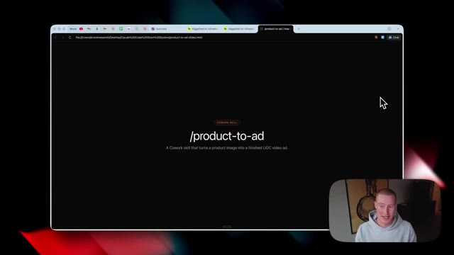
🔍 Agrandir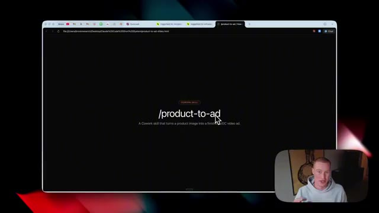
🔍 Agrandirva composer la scène, écrire le script, puis rendre la vidéo pour nous automatiquement. Et par-dessus tout, les vidéos et images générées vont être ajoutées à ce dossier spécifique dans lequel nous travaillons sur notre bureau. Très bien. Je suis donc dans mon projet de publicités ici. Nous sommes dans le dossier de travail spécifique dans lequel nous voulons travailler. Et laissez-moi juste vous montrer ce dossier que j'ai sur mon bureau. C'est donc le dossier de publicités dans lequel nous travaillons. Nous avons quelques éléments différents. Nous avons quatre images de produits différentes de ces lunettes anti-lumière bleue. Et nous allons fondamentalement extraire les images qui se trouvent ici dans le co-work parce qu'il a le contexte de tout ce qui se trouve à l'intérieur de ce dossier.
Interface & Outils : Navigateur web, interface Cowork et Finder macOS.
Contenu textuel & Code : Interface logicielle de gestion de projets et dossiers de fichiers locaux.
Action / Démonstration : Navigation dans l'application de projet et affichage des fichiers du bureau.
Et ça va nous générer des publicités en pilote automatique avec cette compétence spécifique. Je vais vous montrer, je vais juste revenir ici et taper barre oblique et dire « produit vers publicité » pour invoquer fondamentalement cette compétence. Et je vais dire, transformez les images à l'intérieur de ce dossier en publicité vidéo. Très bien. L'une des choses les plus cool à propos de cette compétence, c'est qu'elle va vraiment cibler à qui nous parlons et le ton spécifique que nous recherchons avec cette publicité. Donc elle va toujours nous poser cette question. Elle va afficher cette petite boîte de détails du brief publicitaire. Laissez-moi donc aller de l'avant et sélectionner ceci. Alors, à qui s'adresse cette publicité ? Je veux parler au travailleur de la tech de nuit. Quel ton la publicité doit-elle adopter ? Faisons calme et éducatif. Ensuite, nous voulons qu'ils
Interface & Outils : Application Cowork (interface de type bureau avec panneau latéral de gestion de projets et zone de chat centrale).
Contenu textuel & Code : Commande `/product-to-ad`, brief publicitaire interactif avec options de ciblage d'audience pour un produit spécifique (lunettes anti-lumière bleue).
Action / Démonstration : Saisie d'une commande spécifique dans l'interface Cowork pour automatiser la création de publicités à partir d'images produits, puis configuration du brief.
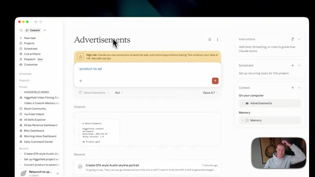
🔍 Agrandir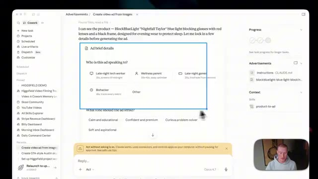
🔍 Agrandird'utiliser le code lors du paiement et allons-y et continuons avec ça. Et maintenant, il va générer l'annonce avec ces spécifications ainsi que ces images de ceux, le produit qui est dans le dossier. Très bien. Alors voilà. Nous avons ce seul personnage créé, ce que, si vous ne savez pas ce que c'est, je vais expliquer comment en créer un plus tard dans cette vidéo, mais c'est une fonctionnalité à l'intérieur de Higgs Field qui générera des personnages que vous pourrez utiliser dans vos différents projets. De cette façon, vous pouvez générer un personnage ou un créateur UGC une seule fois, et vous pouvez en tirer parti et l'utiliser dans toutes les différentes publicitaires que vous avez. Nous pouvons donc continuer et changer cela si nous le voulons.
Interface & Outils : Application Cowork / Interface de génération de vidéos par IA (style dashboard).
Contenu textuel & Code : Brief publicitaire, fichiers de projet (instructions, brief.json, scripts), aperçu du personnage généré. [DESC_IMAGE_1] Saisie de commandes ou préparation de session publicitaire. [DESC_IMAGE_2] Affichage du résultat de génération du personnage. [DESC_IMAGE_3] Visualisation des fichiers contextuels et du rendu final.
Action / Démonstration : Génération d'une publicité vidéo à partir d'un brief textuel et d'images de produits.
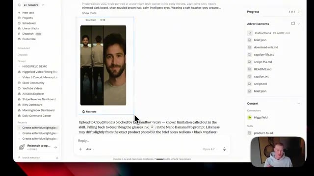
🔍 Agrandir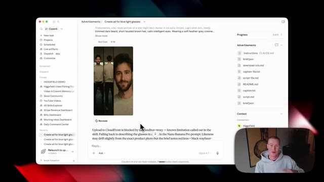
🔍 AgrandirNous pourrions télécharger ceci. Nous pourrions l'animer directement à l'intérieur de Claude, mais je vais maintenant vous montrer les vidéos qui ont été générées. Voici également la première image qui a été générée. Celle-ci a été générée avec Nano Banana Pro. Donc ce qu'elle va faire, c'est qu'elle va d'abord prendre cette image de départ, puis la transformer en vidéo. Donc voici cette première image de cette image. Et maintenant, je peux vous montrer ces vidéos. Ces lunettes anti-lumière bleue à verres rouges sauvent mes yeux lors du temps d'écran tard le soir. Franchement, ça change la donne. Je veux dire, c'waouh, c'est assez fou si on y réfléchit vraiment.
Interface & Outils : Interface de workflow de projet Cowork, écran d'ordinateur du présentateur.
Contenu textuel & Code : Génération d'images par IA avec Nano Banana Pro, texte descriptif de la génération pour des lunettes anti-lumière bleue.
Action / Démonstration : Présentation des résultats de génération d'images et de vidéos par IA pour une publicité de lunettes.
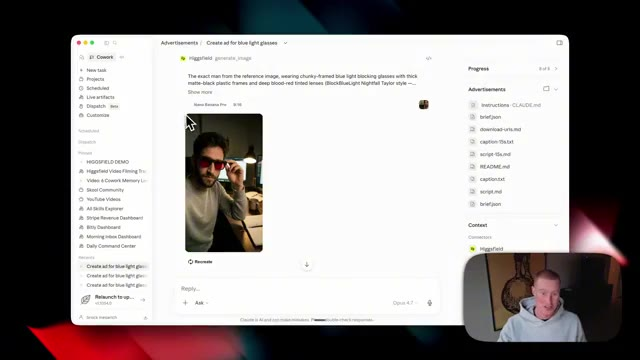
🔍 Agrandir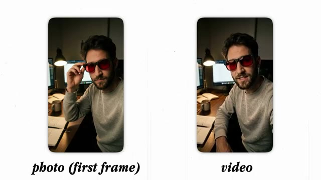
🔍 AgrandirEnsuite, nous avons aussi celui-ci. Des lunettes à verres rouges, instantanément plus chaudes, beaucoup moins de bleu agressif la nuit. Donc, je veux dire, comme vous pouvez le voir, les visuels ici sont phénoménaux. Je crois que ça utilise Seed Dance 2.0, qui est le tout dernier modèle vidéo. Et je veux dire, c'est vraiment solide. On peut évidemment changer ce qu'on veut que le personnage dise, mais je pense que c'est un très, très bon point de départ pour être honnête, et ensuite on peut soit télécharger ceci juste ici, on peut ouvrir le lien, ça va nous emmener sur Hicksfield, je pourrais le voir juste ici : "les lunettes bloquantes ont sauvé mes yeux pendant mon temps d'écran tard le soir, franchement ça change la donne". Je veux dire, les gars, c'est spectaculaire, c'est assez dingue, et ensuite je peux aussi recréer
Interface & Outils : Interface de l'outil Cowork (développement/automatisation) et lecteur vidéo cloud.
Contenu textuel & Code : Prompt de génération vidéo décrivant un homme mettant des lunettes à verres rouges, structure de fichiers de projet (instructions, scripts, brief), et lecteur de prévisualisation vidéo. [DESC_ACTION] Le présentateur présente et commente le résultat visuel d'une vidéo générée par intelligence artificielle simulant un utilisateur essayant des lunettes anti-lumière bleue.
Action / Démonstration : Explications face caméra et analyse conceptuelle des marchés.
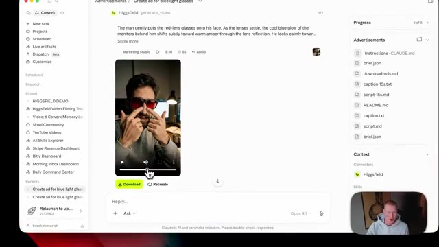
🔍 Agrandir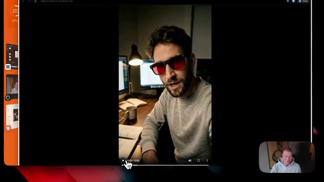
🔍 Agrandirça aussi, donc si je veux régénérer ceci, c'est aussi simple que de le faire juste ici, et puis voici le troisième également, celui-ci a l'air plutôt cool avec l'éclairage : « si les écrans vous empêchent de dormir, ces lunettes anti-lumière bleue à verres rouges sont ma réinitialisation nocturne. » Je veux dire, vous pouvez voir le potentiel ici. Et encore une fois, nous pourrions télécharger ceci dès maintenant. Et puis une autre chose cool avec cette compétence que je vous ai donnée, c'est qu'elle montre même la légende ici que nous pourrions utiliser automatiquement pour cette, vous savez, création publicitaire. Donc si nous voulons publier ceci sur Instagram, par exemple, nous pourrions simplement copier ce texte. Il dit : « arrêtez de faire confiance aux lunettes anti-lumière bleue transparentes après 21 h. Elles bloquent environ 30 % de la lumière bleue. Ce n'est pas »
Interface & Outils : Cowork (interface de gestion de projet et d'intelligence artificielle), application de bureau macOS.
Contenu textuel & Code : Documentation textuelle, fichiers JSON, scripts Markdown (`brief.json`, `Script`, `Caption`, `Readme`, `Download urls`), liens Google Drive et instructions de code.
Action / Démonstration : Navigation dans l'interface de l'application Cowork et présentation des différents assets générés (vidéos, scripts, légendes).
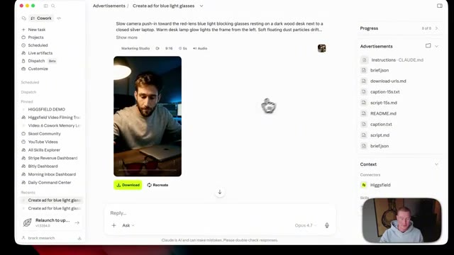
🔍 Agrandir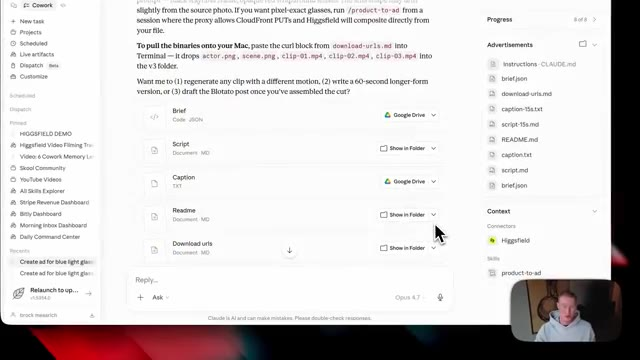
🔍 Agrandir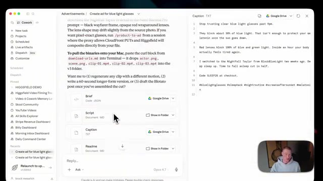
🔍 Agrandirassez pour protéger la mélatonine une fois que le soleil se couche. Mais les gars, c'est toute la puissance d'utiliser Higgs Field, mais aussi d'utiliser la puissance de Claude Cowork et de toutes ces fonctionnalités incroyables en matière de compétences, d'être capable de sauvegarder ceci dans vos dossiers sur votre bureau, toutes ces différentes choses. On a l'impression que Cowork devient vraiment de plus en plus puissant. Quelque chose qui va porter cela au niveau supérieur lorsqu'il s'agit de générer des publicités UGC avec Higgs Field et Claude Cowork ensemble, c'est d'exécuter des tâches planifiées en pilotage automatique. De cette façon, même lorsque vous ne touchez pas à votre ordinateur, vous pouvez générer automatiquement différentes publicités pour vous réveiller et les avoir prêtes à l'emploi
Interface & Outils : Claude Cowork, interface de gestion de projets et de tâches automatisées, Google Drive, éditeur de texte.
Contenu textuel & Code : Génération de contenu de campagne (scripts, légendes), gestion des tâches planifiées (Morning briefing, Youtube new video check, Weekly receipt scan, etc.).
Action / Démonstration : Navigation dans l'application Claude Cowork pour présenter la gestion des fichiers générés et l'automatisation des tâches planifiées.
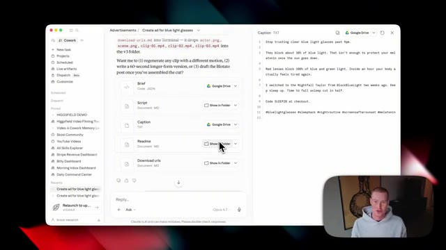
🔍 Agrandir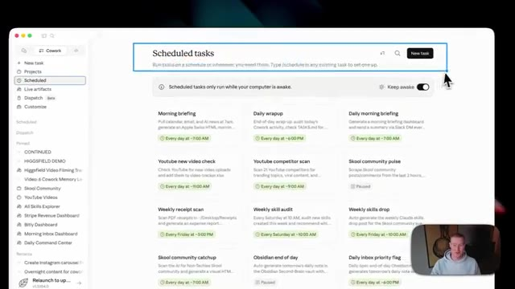
🔍 Agrandiret prêt à être publié. C'est aussi simple que de venir ici et de cliquer sur nouvelle tâche. On pourrait lui donner un nom. On pourrait juste l'appeler UGC Daily ou quelque chose comme ça. Lui donner une description. Et on doit sélectionner le dossier dans lequel on veut travailler. Le côté cool avec ça, c'est qu'on pourrait déposer quelques images de produits différentes dans un dossier dans lequel on travaille. Et en gros dire : Je veux que tu récupères toujours à partir d'ici, que tu récupères les nouvelles images de produits.
Interface & Outils : Application de gestion de tâches et de productivité (Cowork).
Contenu textuel & Code : Formulaire de création de tâche planifiée avec options de nom, description, dossier de projet et fréquence.
Action / Démonstration : Saisie du nom d'une nouvelle tâche planifiée et sélection d'un dossier de travail dans l'interface.
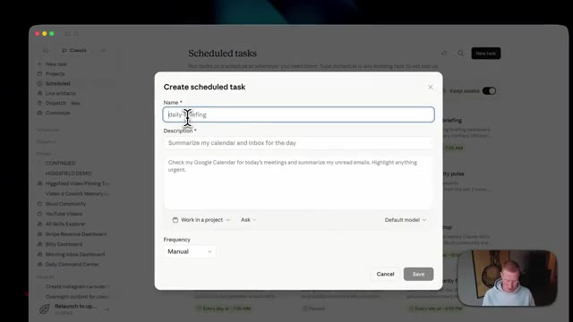
🔍 Agrandir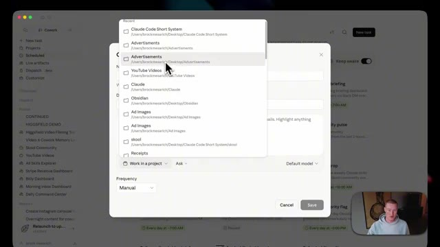
🔍 Agrandir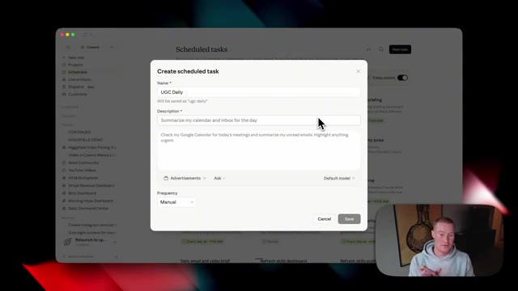
🔍 AgrandirEt chaque jour, je veux que vous génériez cinq vidéos différentes pour chaque produit. Et c'est l'une des fonctionnalités les plus puissantes ici lorsqu'on combine Cowork et Higgsfield. C'est assez fou quand on s'amuse avec. Très bien, alors ensuite, je veux vous montrer comment vous pouvez générer des personnages personnalisés comme celui-ci. Et ceci en utilisant la fonctionnalité « sole » à l'intérieur de Higgsfield. Tout ce que j'avais à faire, c'était de télécharger quelques images de référence différentes de moi-même et je pouvais fondamentalement me générer dans n'importe quel décor.
Interface & Outils : Cowork et Higgsfield.ai
Contenu textuel & Code : Tableaux de bord de gestion de tâches automatisées et interface de génération d'images/vidéos par IA avec prompts et réglages de modèles.
Action / Démonstration : Navigation dans l'interface de planification des tâches puis présentation des outils de génération visuelle de Higgsfield.
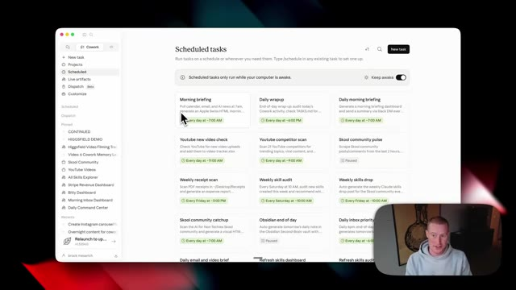
🔍 Agrandir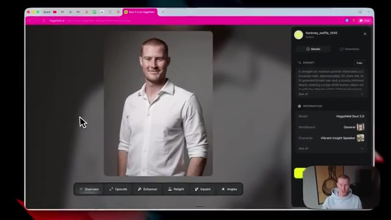
🔍 Agrandir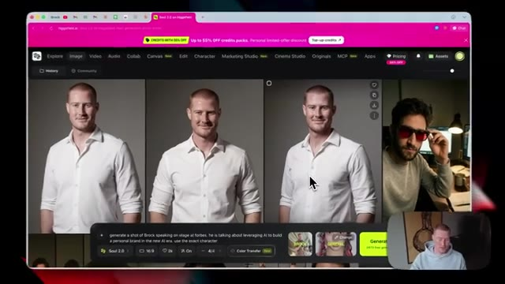
🔍 AgrandirComme vous avez pu le voir, j'ai simplement dit : génère une image de moi sur la scène de Forbes, en train de faire une présentation sur l'IA. Je veux dire, elles sont plutôt réussies. Ça me ressemble vraiment beaucoup, en fait. Et c'est vraiment un très bon portrait ici. Donc non seulement nous pouvons générer des images, mais nous pouvons ensuite générer des vidéos par-dessus. C'est donc génial si vous voulez générer des images ou des vidéos pour Instagram ou même faire des publicités de produits avec votre visage ou votre sosie, ou vous pouvez essentiellement créer votre propre personnage personnalisé à partir de zéro si vous ne voulez pas utiliser votre visage.
Interface & Outils : Navigateur web affichant l'interface de la plateforme de génération d'images Higgsfield.
Contenu textuel & Code : Interface utilisateur de génération d'images par IA, vignettes de prévisualisation et panneau de prompt descriptif. [DESC_IMAGE_1] Démonstration de l'interface de génération d'images et visualisation des résultats obtenus.
Action / Démonstration : Explications face caméra et analyse conceptuelle des marchés.
Première chose que je tiens à mentionner, c'est que nous n'avons pas toujours besoin d'utiliser HiggsField à l'intérieur de Claude Cowork. Nous pourrions aller directement sur HiggsField si nous ne voulons pas gaspiller nos jetons Claude, parce que vous n'allez pas toujours avoir besoin d'utiliser Cowork pour générer ces images. Vous pouvez simplement aller directement sur HiggsField. Donc ce que je vais faire, c'est venir sur HiggsField et les gars, il y a tellement de fonctionnalités sur cette plateforme que je ne peux même pas commencer à les aborder.
Interface & Outils : Claude Cowork et navigateur web affichant le site Higgsfield AI.
Contenu textuel & Code : Menus de configuration de projets, invites textuelles et options de génération multimédia (Canvas, Higgsfield MCP, GPT Image 2).
Action / Démonstration : Navigation et présentation des interfaces de travail entre Claude Cowork et la plateforme Higgsfield AI.
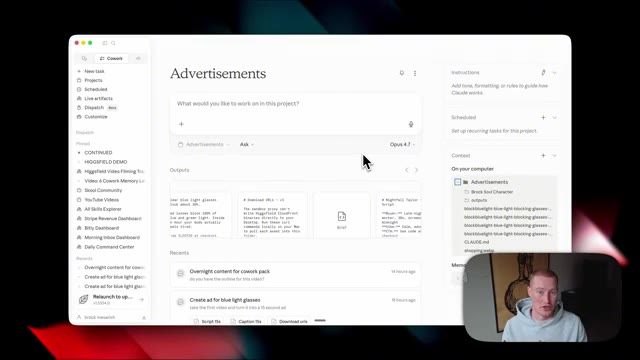
🔍 Agrandir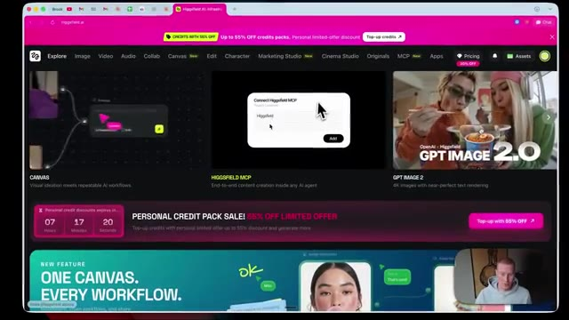
🔍 AgrandirMais je vais juste vous montrer comment utiliser la fonctionnalité de personnage afin de générer une ID de vous-même ou, vous savez, d'un personnage spécifique que vous voulez créer. Donc, nous allons venir ici et cliquer sur « personnage » en haut à droite ici. Donc, je vais cliquer dessus, cliquer sur personnage ID soul. Et à partir d'ici, nous allons être amenés sur cette page. J'en ai déjà quelques-uns que j'ai créés, mais laissez-moi vous montrer très rapidement comment les générer.
Interface & Outils : Navigateur web affichant la plateforme de création d'IA Higgsfield AI.
Contenu textuel & Code : Menus de navigation, options de création de personnages, bannières publicitaires et options de modélisation par IA.
Action / Démonstration : Navigation et clic sur l'onglet de création de personnage dans l'interface utilisateur.
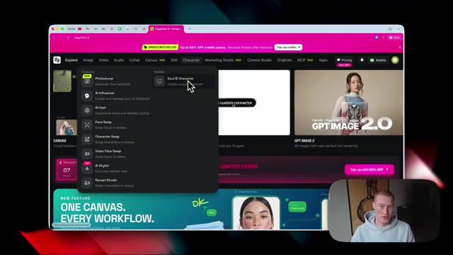
🔍 Agrandir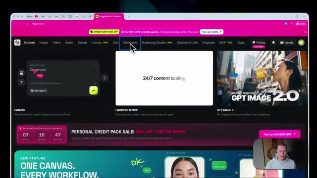
🔍 Agrandir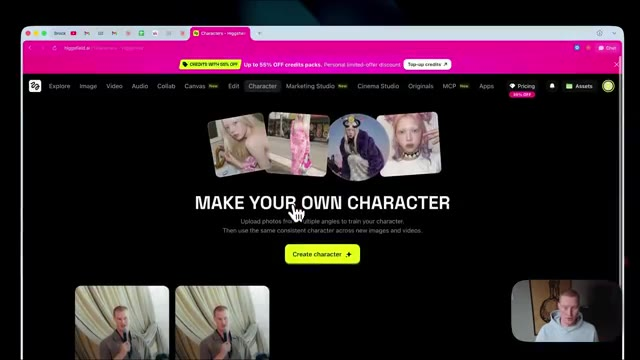
🔍 AgrandirDonc nous pouvons venir ici, cliquer sur générer un personnage. Et nous voulons nous assurer d'ajouter des photos claires de notre visage qui n'ont pas un mauvais éclairage ou surtout qui n'ont pas d'autres personnes sur les images. Donc je vais juste en télécharger quelques-unes. J'ai ce dossier juste ici. J'ai des images de moi-même. Je vais juste cliquer sur ouvrir. Maintenant, ça va toutes les télécharger.
Interface & Outils : Navigateur web avec interface de génération de personnages et explorateur de fichiers système.
Contenu textuel & Code : Recommandations pour l'upload de photos (visage clair, une seule personne, éviter les doublons ou photos de groupe) et sélection de fichiers image.
Action / Démonstration : Téléchargement et sélection de plusieurs photos de visage pour créer un personnage personnalisé.
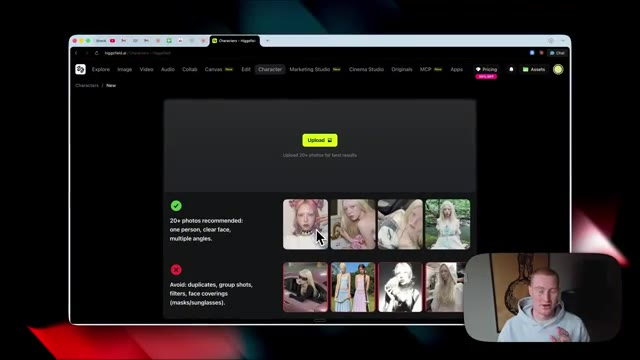
🔍 Agrandir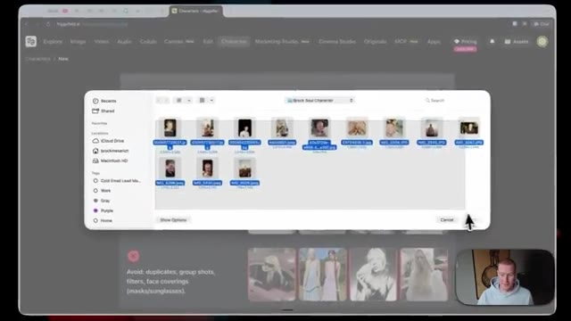
🔍 AgrandirEt encore une fois, plus vous ajoutez d'images, mieux c'est, avec un bon éclairage et rien qui ne cache votre visage. Donc par exemple, celle-ci juste ici, je devrais probablement la supprimer parce que je porte des lunettes de soleil. Toutes les autres sont plutôt solides et donnent des images dynamiques de moi-même. Ensuite, je vais simplement cliquer sur créer. Et maintenant, ça va lancer le processus. Ça devrait prendre peut-être deux à trois minutes et nous devrions avoir notre personnage généré.
Interface & Outils : Navigateur web affichant une application de création de personnages par IA (Hugging Face ou similaire).
Contenu textuel & Code : Galerie d'images téléchargées pour l'entraînement d'un modèle, compteur d'images (12/80 puis 11/80), et indicateur de qualité de résolution.
Action / Démonstration : Suppression d'une image inadaptée (portant des lunettes de soleil) de la grille d'entraînement du personnage.
Et ensuite, une fois que notre personnage est généré, nous pouvons simplement cliquer dessus. Et juste ici, nous pouvons fondamentalement commencer à générer des images. J'ai donc donné le prompt : générer une image de Brock filmant une vidéo YouTube dans son bureau avec un super éclairage cinématographique, en train de parler à la caméra tout en montrant une démo sur son ordinateur portable. Et ensuite, je vais sélectionner le format d'image dans lequel je veux générer ces images. Mettons en 16 par 9.
Interface & Outils : Interface web de génération d'images par IA (outil de génération de personnages / studio créatif IA).
Contenu textuel & Code : Prompt affiché : "generate an image of Brock filming a youtube video in his office with cool cinematic lighting. Talking to the camera while showing a demo on his laptop". Options sélectionnées : Modèle Soul 2.0, format 16:9, résolution 2K, 4/4 images, personnage référence "BROCK".
Action / Démonstration : Démonstration de la saisie d'un prompt détaillé et de la configuration du modèle pour générer des images cohérentes basées sur un personnage créé.
Nous pourrions choisir l'amélioration de prompt de qualité. Nous pourrions l'activer. De cette façon, il va prendre ce prompt très basique et l'améliorer. Ensuite, nous pourrions générer autant de ces images que nous le voulons. Allons-y, passons à quatre et cliquons simplement sur générer. Très bien. Et juste comme ça, nous avons effectivement ces images de moi dans un bureau en train de filmer une vidéo avec un éclairage cinématique. Ça a l'air vraiment cool.
Interface & Outils : Navigateur web affichant l'outil de génération d'images par IA Higgsfield AI.
Contenu textuel & Code : Panneau de configuration avec le prompt textuel, les options de rapport de format, de qualité et le modèle Higgsfield Soul 2.0.
Action / Démonstration : Navigation et configuration des paramètres de génération d'images dans l'interface de l'outil d'IA.
J'aimerais honnêtement que mon installation ressemble à ça. Pour que vous puissiez, espérons-le, commencer à voir à quel point cette seule fonctionnalité de Higgs Field est puissante. Et c'est encore plus puissant lorsque nous combinons cela avec co-work et que nous commençons à exécuter des compétences spécifiques afin de générer différentes publicités, images et vidéos avec tous ces différents personnages que nous créons. Très bien. Une autre des compétences qui se trouve dans ce pack de plugins que je vous ai donné gratuitement, et qui est vraiment insensée lorsque vous l'utilisez avec Higgs Field, c'est la compétence de carrousel IG. Cela va réellement générer des carousels Instagram pour nous en pilotage automatique. Et laissez-moi vous montrer exactement ce que je veux dire. Très bien. Voici donc les carousels que j'ai générés moi-même.
Interface & Outils : Interface Claude Cowork, application de gestion de compétences et d'automatisation.
Contenu textuel & Code : Modules et compétences du « Higgsfield cowork pack » : Character locker, Instagram carousels, Overnight content, Product-to-ad, Setup-higgsfield-project, URL-to-ad.
Action / Démonstration : Navigation et présentation des différentes compétences et automatisations disponibles dans le pack Higgsfield combiné avec Claude Cowork.
et elles ont l'air vraiment géniales. Juste ici. Il est écrit : « cinq compétences Cloud Code dont je ne peux pas me passer ». Ça montre la compétence de respiration matinale, le générateur de carrousels Instagram, le générateur de factures, le scanner de reçus. Toutes ces différentes images ont été générées avec cette compétence que je m'apprête à vous montrer, tout comme celle-ci juste ici. C'est un autre carrousel. Et puis celle-ci aussi. Je veux dire, elles sont incroyablement réussies. Quand on y pense, le fait que l'IA génère tout cela, et pour vous montrer comment cela fonctionne en pratique, rendons-nous sur mon Instagram juste ici.
Interface & Outils : Navigateur web affichant l'interface d'Excalidraw avec divers visuels de carrousels Instagram et incrustation vidéo du présentateur en bas à droite.
Contenu textuel & Code : Maquettes graphiques de publications Instagram avec des titres textuels en anglais (« Morning Briefing », « IG Carousel Generator », « Invoice Generator », « New Claude Opus 4.7 », « Export anywhere »).
Action / Démonstration : Le présentateur navigue et zoome sur différentes sections d'un tableau blanc interactif présentant des exemples de designs et de publications.
Ce carrousel a 2 500 likes et il a environ 3 000 commentaires juste ici. Donc ça a l'air absolument parfait et ils fonctionnent extrêmement bien. Comme vous pouvez le voir sur ma page Instagram, celui-ci a presque 800 likes. Il a environ 1 900 commentaires. Donc ça fonctionne, et je vais maintenant vous montrer comment vous pouvez générer des carrousels, et vous allez probablement vouloir les personnaliser à votre goût, mais c'est un excellent point de départ pour commencer à créer des carrousels en pilotage automatique en utilisant Claude Cowork et Hicksfield. Très bien, je suis donc de retour dans mon dossier de publicités à l'intérieur de Cowork. Donc ce que je vais faire, c'est que je vais simplement taper slash IG carousel.
Interface & Outils : Navigateur web affichant l'interface de la plateforme Instagram.
Contenu textuel & Code : Publications de carrousels Instagram avec du texte marketing, des titres de compétences IA et des statistiques d'engagement (likes, commentaires). [DESC_IMAGE_3] Navigation et présentation des publications à succès du compte Instagram pour illustrer l'efficacité des outils présentés.
Action / Démonstration : Explications face caméra et analyse conceptuelle des marchés.
Et à partir de là, je vais simplement écrire exactement ce sur quoi je veux créer cela : Génère un carrousel Instagram sur les nouveaux artifacts en direct de Claude qui viennent de sortir. Donc par exemple, ça va être spécifique pour moi dans la création d'actualités sur l'IA et de contenu sur l'IA. Comme vous pouvez le voir sur mon Instagram, c'est adapté à mon style et j'ai personnalisé ça. Cette compétence sera un très bon point de départ pour que vous commenciez à générer des carrousels.
Interface & Outils : Interface web de type assistant IA / Cowork avec panneau latéral de gestion des tâches et des projets.
Contenu textuel & Code : Barre de saisie de prompt contenant la commande ou le texte '/ig-carousel' avec un curseur de souris pointant vers la zone de texte.
Action / Démonstration : Saisie d'une instruction ou d'un prompt pour générer un carrousel Instagram à l'aide des fonctionnalités de l'IA.
Et vous pouvez simplement faire des allers-retours et dire exactement à Claude à quoi vous voulez que ces résultats ressemblent. Pour moi personnellement, je lui ai donné quelques images de référence dont j'ai fait une capture d'écran, je les ai fournies à Claude et j'ai dit : hé, je veux que tu génères des images similaires à celles-ci. Et puis il est vraiment doué pour créer ça. Et si vous voulez vraiment personnaliser cette compétence, vous allez simplement venir ici sur le côté droit où sont affichées les compétences.
Interface & Outils : Cowork / Interface de développement IA.
Contenu textuel & Code : Un prompt textuel pour générer un carrousel Instagram sur les artefacts en direct de Claude, avec des panneaux de progression et de contexte.
Action / Démonstration : Le présentateur explique comment il interagit avec l'outil et fournit des images de référence.
Vous allez sélectionner cela. Vous pouvez ensuite cliquer sur gérer, et cela vous amènera à toutes vos différentes compétences. Vous allez vouloir cliquer dessus. Et à partir d'ici, vous pouvez simplement cliquer sur modifier avec Claude. Et en gros, vous pouvez juste déballer tout ce que vous avez en tête et lui donner toutes les instructions sur la façon exacte dont vous voulez que cela ressemble. Très bien, et environ deux ou trois minutes plus tard, nous avons maintenant ces visuels qui ont été créés et nous pouvons les visualiser directement à l'intérieur de Claude, ce qui est plutôt cool.
Interface & Outils : Interface web de Claude Cowork / plateforme de gestion de compétences et d'agents IA.
Contenu textuel & Code : Documentation de compétences, instructions de génération d'images (Nano Banana Pro) et aperçus de visuels générés.
Action / Démonstration : Navigation dans le gestionnaire de compétences et affichage des résultats d'un flux de travail automatisé.
Nous pourrions les ouvrir. Nous pourrions même apporter des modifications à chacun d'entre eux. Nous pourrions les animer, les transformer en vidéos si nous le souhaitons, et nous pourrions les télécharger directement depuis ici. C'est vraiment bien pour ce premier prompt initial que je lui ai donné. Nous pourrions modifier cela, faire différentes itérations, puis dire, enregistre cela comme une compétence. Ainsi, nous pourrions toujours utiliser exactement ce même format. C'est la puissance d'utiliser Claude Cowork et Hicksfield ensemble.
Interface & Outils : Application de génération de contenu visuel (type Higgsfield / Cowork) avec interface de gestion de projets.
Contenu textuel & Code : Génération de visuels pour réseaux sociaux au format portrait (carrousel Instagram) avec des prompts textuels et des options d'édition.
Action / Démonstration : Navigation et survol des différentes images générées pour les examiner, les animer ou les télécharger directement depuis l'interface.
De plus, si vous souhaitez aller plus loin dans l'itération et ne pas gaspiller vos jetons Claude, si vous allez directement dans Higgs Field, vous verrez cela ainsi que toutes les autres images que vous avez générées dans votre compte, et vous pourrez apporter des modifications directement ici, que vous vouliez rééclairer, améliorer, changer le texte, et cetera. Très bien, les amis, voilà qui est fait. Nous avons plongé très profondément dans la manière d'utiliser Claude Cowork et Higgs Field ensemble pour générer des images et des vidéos.
Interface & Outils : Navigateur web affichant Higgs Field et l'application Cowork, avec webcam du présentateur en bas à droite.
Contenu textuel & Code : Interface utilisateur de génération d'images, panneaux de prompts, options d'édition et flux de travail de projets.
Action / Démonstration : Navigation et démonstration visuelle des outils de génération d'images et de gestion de projets au sein de l'interface.
Nous avons même créé des automatisations personnalisées afin de faire tourner cela en pilote automatique. Si vous avez tiré un peu de valeur de cette vidéo, laissez un pouce bleu, abonnez-vous à la chaîne pour plus de contenu. Et si vous voulez aller encore plus en profondeur, rejoignez ma communauté School, il y a un lien dans la description pour le faire, ainsi que si vous voulez les ressources gratuitement pour tous les plugins que j'ai montrés dans cette vidéo, il y a aussi un lien pour les récupérer également. Sans plus attendre les gars, merci infiniment d'être restés jusqu'à la fin et je vous vois dans la prochaine vidéo, salut !
Interface & Outils : YouTube et interface de la communauté Skool.
Contenu textuel & Code : Vignettes de vidéos YouTube, titres de tutoriels, publications de membres et tableau de classement d'une communauté. [DESC_IMAGE_3] Présentation face caméra incitant à rejoindre la communauté via le lien en description.
Action / Démonstration : Explications face caméra et analyse conceptuelle des marchés.